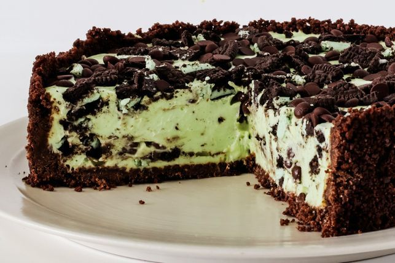

Mint Choc-Chip Cheesecake

Description
Mint and Choc-Chips come together is this delicious cheesecake topped with crushed oreos
Ingredients
- 250g Choc Ripple Biscuits
- 75g melted butter
- 500g cream cheese, at room temperature
- 165g caster suger
- 1 tsp peppermint essence
- 150ml room temperature thickend cream
- Green Food colouring, to tint
- 2 1/2 tsp gelatine powder
- 1 packet double stuff orep
- 100g dark chocolate chips
Method
- lightly grease 20cm springform pan, line base with baking paper
- In food processor finlet chop Choc Ripple biscuits and combine wiht butter
- Move to prepared pan, evenley press mixture over base and sideof pan stop 1cm below rim, refidgerate
- In clean food processor, process cream cheese and sugar untill smooth
- Add peppermint essence, cream and enough food colour to tint light green
- Process untill evenly combined
- Disolve gelatine powder in 2 1/2 tbsp cold water
- Add gelatine mix to cream cheese mix (make sure both are similar in temperature to avoid lumps) process untill combined
- Fold chopped Oreos and 1/3 cup choc chips into cream cheese mixture, pour into biscuit case
- Coarslet chop 4 oreos and sprink ontop with remaing choc chips
- Cover and refidgerate about 6 hours untill firm, before serving